第7章 编写MapReduce程序
辽宁师范大学 • 张大为@https://daweizh.github.io/bd1/
7.1 准备远程调试环境
- 在windows下设置系统环境变量HADOOP_USER_NAME=jack
- 以管理员身份启动Eclipse
- 在src下创建hadoop-cluster.xml集群配置文件
<?xml version="1.0" encoding="UTF-8"?> <configuration> <property> <name>hadoop.job.user</name> <value>jack</value> </property> <property> <name>fs.defaultFS</name> <value>hdfs://node0:9000</value> </property> <property> <name>mapred.job.tracker</name> <value>node0:9001</value> </property> <property> <name>mapreduce.framework.name</name> <value>yarn</value> </property> <property> <name>yarn.resourcemanager.hostname</name> <value>node0</value> </property> <property> <name>mapreduce.app-submission.cross-platform</name> <value>true</value> </property> <property> <name>yarn.app.mapreduce.am.env</name> <value>HADOOP_MAPRED_HOME=/usr/bd/hadoop-3.1.2</value> </property> <property> <name>mapreduce.map.env</name> <value>HADOOP_MAPRED_HOME=/usr/bd/hadoop-3.1.2</value> </property> <property> <name>mapreduce.reduce.env</name> <value>HADOOP_MAPRED_HOME=/usr/bd/hadoop-3.1.2</value> </property> <property> <name>mapred.jar</name> <value>D:/students/201621014321/bd1/workspace/项目/out/可执行打包文件.jar</value> </property> </configuration>
- 在src下创建log4j.properties日志配置文件
hadoop.root.logger=INFO,console hadoop.log.dir=. hadoop.log.file=hadoop.log # Define the root logger to the system property "hadoop.root.logger". log4j.rootLogger=${hadoop.root.logger}, EventCounter # Logging Threshold log4j.threshold=ALL # Null Appender log4j.appender.NullAppender=org.apache.log4j.varia.NullAppender # # Rolling File Appender - cap space usage at 5gb. # hadoop.log.maxfilesize=256MB hadoop.log.maxbackupindex=20 log4j.appender.RFA=org.apache.log4j.RollingFileAppender log4j.appender.RFA.File=${hadoop.log.dir}/${hadoop.log.file} log4j.appender.RFA.MaxFileSize=${hadoop.log.maxfilesize} log4j.appender.RFA.MaxBackupIndex=${hadoop.log.maxbackupindex} log4j.appender.RFA.layout=org.apache.log4j.PatternLayout # Pattern format: Date LogLevel LoggerName LogMessage log4j.appender.RFA.layout.ConversionPattern=%d{ISO8601} %p %c: %m%n # Debugging Pattern format #log4j.appender.RFA.layout.ConversionPattern=%d{ISO8601} %-5p %c{2} (%F:%M(%L)) - %m%n # # Daily Rolling File Appender # log4j.appender.DRFA=org.apache.log4j.DailyRollingFileAppender log4j.appender.DRFA.File=${hadoop.log.dir}/${hadoop.log.file} # Rollover at midnight log4j.appender.DRFA.DatePattern=.yyyy-MM-dd log4j.appender.DRFA.layout=org.apache.log4j.PatternLayout # Pattern format: Date LogLevel LoggerName LogMessage log4j.appender.DRFA.layout.ConversionPattern=%d{ISO8601} %p %c: %m%n # Debugging Pattern format #log4j.appender.DRFA.layout.ConversionPattern=%d{ISO8601} %-5p %c{2} (%F:%M(%L)) - %m%n # # console # Add "console" to rootlogger above if you want to use this # log4j.appender.console=org.apache.log4j.ConsoleAppender log4j.appender.console.target=System.err log4j.appender.console.layout=org.apache.log4j.PatternLayout log4j.appender.console.layout.ConversionPattern=%d{ISO8601} %p %c{2}: %m%n # # TaskLog Appender # log4j.appender.TLA=org.apache.hadoop.mapred.TaskLogAppender log4j.appender.TLA.layout=org.apache.log4j.PatternLayout log4j.appender.TLA.layout.ConversionPattern=%d{ISO8601} %p %c: %m%n # # HDFS block state change log from block manager # # Uncomment the following to log normal block state change # messages from BlockManager in NameNode. #log4j.logger.BlockStateChange=DEBUG # #Security appender # hadoop.security.logger=INFO,NullAppender hadoop.security.log.maxfilesize=256MB hadoop.security.log.maxbackupindex=20 log4j.category.SecurityLogger=${hadoop.security.logger} hadoop.security.log.file=SecurityAuth-${user.name}.audit log4j.appender.RFAS=org.apache.log4j.RollingFileAppender log4j.appender.RFAS.File=${hadoop.log.dir}/${hadoop.security.log.file} log4j.appender.RFAS.layout=org.apache.log4j.PatternLayout log4j.appender.RFAS.layout.ConversionPattern=%d{ISO8601} %p %c: %m%n log4j.appender.RFAS.MaxFileSize=${hadoop.security.log.maxfilesize} log4j.appender.RFAS.MaxBackupIndex=${hadoop.security.log.maxbackupindex} # # Daily Rolling Security appender # log4j.appender.DRFAS=org.apache.log4j.DailyRollingFileAppender log4j.appender.DRFAS.File=${hadoop.log.dir}/${hadoop.security.log.file} log4j.appender.DRFAS.layout=org.apache.log4j.PatternLayout log4j.appender.DRFAS.layout.ConversionPattern=%d{ISO8601} %p %c: %m%n log4j.appender.DRFAS.DatePattern=.yyyy-MM-dd # # hadoop configuration logging # # Uncomment the following line to turn off configuration deprecation warnings. # log4j.logger.org.apache.hadoop.conf.Configuration.deprecation=WARN # # hdfs audit logging # hdfs.audit.logger=INFO,NullAppender hdfs.audit.log.maxfilesize=256MB hdfs.audit.log.maxbackupindex=20 log4j.logger.org.apache.hadoop.hdfs.server.namenode.FSNamesystem.audit=${hdfs.audit.logger} log4j.additivity.org.apache.hadoop.hdfs.server.namenode.FSNamesystem.audit=false log4j.appender.RFAAUDIT=org.apache.log4j.RollingFileAppender log4j.appender.RFAAUDIT.File=${hadoop.log.dir}/hdfs-audit.log log4j.appender.RFAAUDIT.layout=org.apache.log4j.PatternLayout log4j.appender.RFAAUDIT.layout.ConversionPattern=%d{ISO8601} %p %c{2}: %m%n log4j.appender.RFAAUDIT.MaxFileSize=${hdfs.audit.log.maxfilesize} log4j.appender.RFAAUDIT.MaxBackupIndex=${hdfs.audit.log.maxbackupindex} # # NameNode metrics logging. # The default is to retain two namenode-metrics.log files up to 64MB each. # namenode.metrics.logger=INFO,NullAppender log4j.logger.NameNodeMetricsLog=${namenode.metrics.logger} log4j.additivity.NameNodeMetricsLog=false log4j.appender.NNMETRICSRFA=org.apache.log4j.RollingFileAppender log4j.appender.NNMETRICSRFA.File=${hadoop.log.dir}/namenode-metrics.log log4j.appender.NNMETRICSRFA.layout=org.apache.log4j.PatternLayout log4j.appender.NNMETRICSRFA.layout.ConversionPattern=%d{ISO8601} %m%n log4j.appender.NNMETRICSRFA.MaxBackupIndex=1 log4j.appender.NNMETRICSRFA.MaxFileSize=64MB # # DataNode metrics logging. # The default is to retain two datanode-metrics.log files up to 64MB each. # datanode.metrics.logger=INFO,NullAppender log4j.logger.DataNodeMetricsLog=${datanode.metrics.logger} log4j.additivity.DataNodeMetricsLog=false log4j.appender.DNMETRICSRFA=org.apache.log4j.RollingFileAppender log4j.appender.DNMETRICSRFA.File=${hadoop.log.dir}/datanode-metrics.log log4j.appender.DNMETRICSRFA.layout=org.apache.log4j.PatternLayout log4j.appender.DNMETRICSRFA.layout.ConversionPattern=%d{ISO8601} %m%n log4j.appender.DNMETRICSRFA.MaxBackupIndex=1 log4j.appender.DNMETRICSRFA.MaxFileSize=64MB # Custom Logging levels #log4j.logger.org.apache.hadoop.mapred.JobTracker=DEBUG #log4j.logger.org.apache.hadoop.mapred.TaskTracker=DEBUG #log4j.logger.org.apache.hadoop.hdfs.server.namenode.FSNamesystem.audit=DEBUG # AWS SDK & S3A FileSystem #log4j.logger.com.amazonaws=ERROR log4j.logger.com.amazonaws.http.AmazonHttpClient=ERROR #log4j.logger.org.apache.hadoop.fs.s3a.S3AFileSystem=WARN # # Event Counter Appender # Sends counts of logging messages at different severity levels to Hadoop Metrics. # log4j.appender.EventCounter=org.apache.hadoop.log.metrics.EventCounter # # Job Summary Appender # # Use following logger to send summary to separate file defined by # hadoop.mapreduce.jobsummary.log.file : # hadoop.mapreduce.jobsummary.logger=INFO,JSA # hadoop.mapreduce.jobsummary.logger=${hadoop.root.logger} hadoop.mapreduce.jobsummary.log.file=hadoop-mapreduce.jobsummary.log hadoop.mapreduce.jobsummary.log.maxfilesize=256MB hadoop.mapreduce.jobsummary.log.maxbackupindex=20 log4j.appender.JSA=org.apache.log4j.RollingFileAppender log4j.appender.JSA.File=${hadoop.log.dir}/${hadoop.mapreduce.jobsummary.log.file} log4j.appender.JSA.MaxFileSize=${hadoop.mapreduce.jobsummary.log.maxfilesize} log4j.appender.JSA.MaxBackupIndex=${hadoop.mapreduce.jobsummary.log.maxbackupindex} log4j.appender.JSA.layout=org.apache.log4j.PatternLayout log4j.appender.JSA.layout.ConversionPattern=%d{ISO8601} %p %c{2}: %m%n log4j.logger.org.apache.hadoop.mapred.JobInProgress$JobSummary=${hadoop.mapreduce.jobsummary.logger} log4j.additivity.org.apache.hadoop.mapred.JobInProgress$JobSummary=false # # shuffle connection log from shuffleHandler # Uncomment the following line to enable logging of shuffle connections # log4j.logger.org.apache.hadoop.mapred.ShuffleHandler.audit=DEBUG # # Yarn ResourceManager Application Summary Log # # Set the ResourceManager summary log filename yarn.server.resourcemanager.appsummary.log.file=rm-appsummary.log # Set the ResourceManager summary log level and appender yarn.server.resourcemanager.appsummary.logger=${hadoop.root.logger} #yarn.server.resourcemanager.appsummary.logger=INFO,RMSUMMARY # To enable AppSummaryLogging for the RM, # set yarn.server.resourcemanager.appsummary.logger to # <LEVEL>,RMSUMMARY in hadoop-env.sh # Appender for ResourceManager Application Summary Log # Requires the following properties to be set # - hadoop.log.dir (Hadoop Log directory) # - yarn.server.resourcemanager.appsummary.log.file (resource manager app summary log filename) # - yarn.server.resourcemanager.appsummary.logger (resource manager app summary log level and appender) log4j.logger.org.apache.hadoop.yarn.server.resourcemanager.RMAppManager$ApplicationSummary=${yarn.server.resourcemanager.appsummary.logger} log4j.additivity.org.apache.hadoop.yarn.server.resourcemanager.RMAppManager$ApplicationSummary=false log4j.appender.RMSUMMARY=org.apache.log4j.RollingFileAppender log4j.appender.RMSUMMARY.File=${hadoop.log.dir}/${yarn.server.resourcemanager.appsummary.log.file} log4j.appender.RMSUMMARY.MaxFileSize=256MB log4j.appender.RMSUMMARY.MaxBackupIndex=20 log4j.appender.RMSUMMARY.layout=org.apache.log4j.PatternLayout log4j.appender.RMSUMMARY.layout.ConversionPattern=%d{ISO8601} %p %c{2}: %m%n # Appender for viewing information for errors and warnings yarn.ewma.cleanupInterval=300 yarn.ewma.messageAgeLimitSeconds=86400 yarn.ewma.maxUniqueMessages=250 log4j.appender.EWMA=org.apache.hadoop.yarn.util.Log4jWarningErrorMetricsAppender log4j.appender.EWMA.cleanupInterval=${yarn.ewma.cleanupInterval} log4j.appender.EWMA.messageAgeLimitSeconds=${yarn.ewma.messageAgeLimitSeconds} log4j.appender.EWMA.maxUniqueMessages=${yarn.ewma.maxUniqueMessages} # Log levels of third-party libraries log4j.logger.org.apache.commons.beanutils=WARN
7.2 dedup调式运行过程
文件合并和去重算法的编写、调试和提交运行过程。
7.2.1 问题描述
对于两个输入文件A和B，请编写MapReduce程序对两个文件进行合并，并剔除其中重复的内容得到一个新的输出文件C。
- 输入文件A的样例
20150101 x 20150102 y 20150103 x 20150104 y 20150105 z 20150106 x - 输入文件B的样例
20150101 y 20150102 y 20150103 x 20150104 z 20150105 y - 根据输入文件A和B合并得到的输出文件C的样例
20150101 x 20150101 y 20150102 y 20150103 x 20150104 y 20150104 z 20150105 y 20150105 z 20150106 x - 解题思路
数据去重的最终目标是让原始数据中出现次数超过一次的数据在输出文件中只出现一次。由于shuffle会有合并相同key值记录的过程，会将不同文件中相同内容数据的Key设置成一样的，即是Map处理后是一样的，然后把交给Reduce，无论这个数据的value-list是怎么样，只要在最终结果输出它的key就行了。
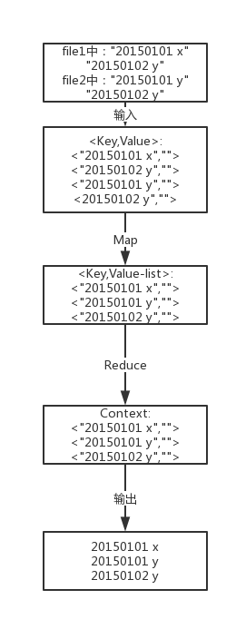
7.2.2 准备解题
- 创建Map/Reduce项目：dedup
- 在dedup下创建与src同级目录out
- 在src下新建包：dedup.mapred
- 在dedup.mapred包中新建类Dedup.java同时勾选main函数
- 在dedup下建立与src同级目录：dedup
- 在dedup中创建数据文件a.txt
20150101 x 20150102 y 20150103 x 20150104 y 20150105 z 20150106 x - 在dat中创建数据文件b.txt
20150101 y 20150102 y 20150103 x 20150104 z 20150105 y - 上传dedup文件夹到Hadoop DFS的/user/jack下
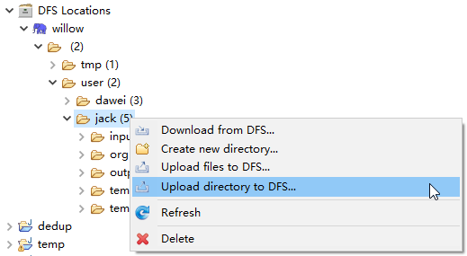 - 上传完成后的项目状态
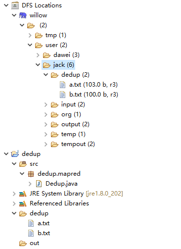
7.2.3 Map/Reduce编程
- 创建基础框架
package dedup.mapred; import java.net.URI; import org.apache.hadoop.conf.Configuration; import org.apache.hadoop.fs.FileSystem; import org.apache.hadoop.fs.Path; import org.apache.hadoop.mapreduce.Job; import org.apache.hadoop.mapreduce.lib.input.FileInputFormat; import org.apache.hadoop.mapreduce.lib.output.FileOutputFormat; public class Dedup { static { try { System.load("D:/students/201621014321/bd1/wedo/hadoop/bin/hadoop.dll"); } catch (UnsatisfiedLinkError e) { System.err.println("Native code library failed to load.\n" + e); System.exit(1); } } public static void main(String[] args) throws Exception{ Configuration conf=new Configuration(); conf.addResource("hadoop-cluster.xml"); String[] otherArgs=new String[]{"dedup","output"}; if(otherArgs.length!=2){ System.err.println("Usage:Merge and duplicate removal<in><out>"); System.exit(2); } Path in = new Path(otherArgs[0]); Path out = new Path(otherArgs[1]); FileSystem fileSystem = FileSystem.get(new URI(in.toString()), conf); if (fileSystem.exists(out)) { fileSystem.delete(out, true); } Job job=Job.getInstance(conf,"Merge and duplicate removal"); FileInputFormat.addInputPath(job,in); FileOutputFormat.setOutputPath(job,out); System.exit(job.waitForCompletion(true)?0:1); } }
- 生成jar包
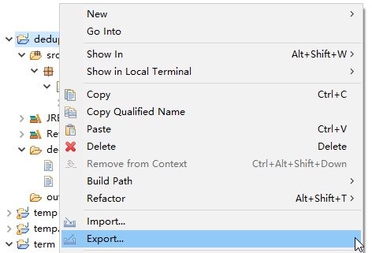 - 选择可执行jar包
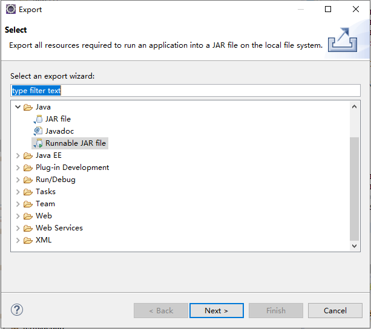 - 准备生成jar包的基本设置
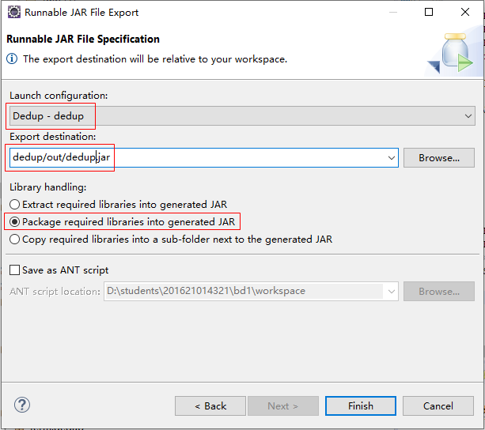 - 在Hadoop上执行该项目
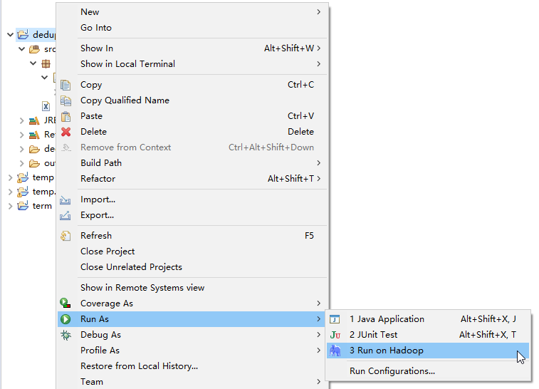 - 选择执行主类
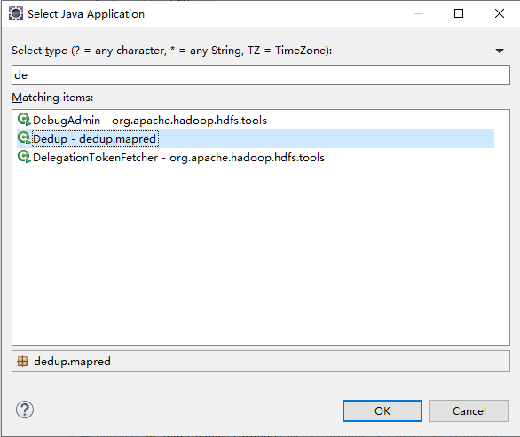 - 观察作业执行情况
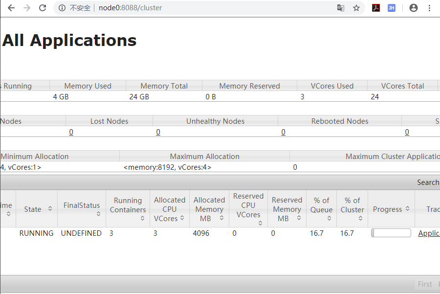 - 作业执行成功
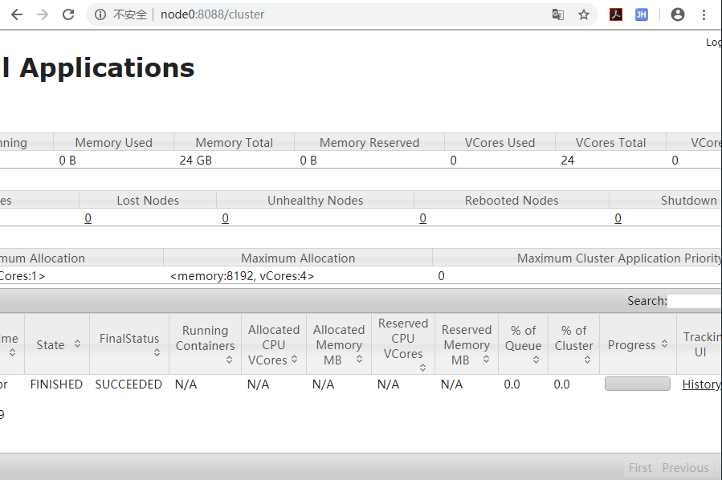 - 查看作业执行历史
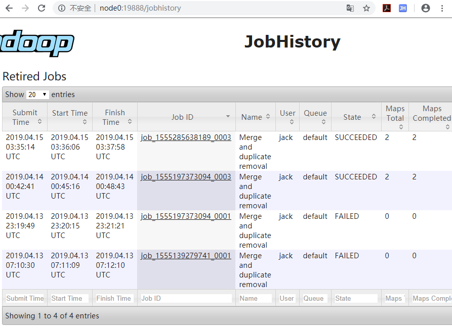 - 生成的数据情况
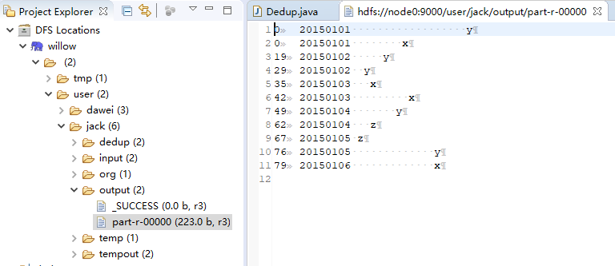
7.2.4 观察Map和Reduce的作用
- 只增加Map
package dedup.mapred; import java.io.IOException; import java.net.URI; import org.apache.hadoop.conf.Configuration; import org.apache.hadoop.fs.FileSystem; import org.apache.hadoop.fs.Path; import org.apache.hadoop.io.Text; import org.apache.hadoop.mapreduce.Job; import org.apache.hadoop.mapreduce.Mapper; import org.apache.hadoop.mapreduce.lib.input.FileInputFormat; import org.apache.hadoop.mapreduce.lib.output.FileOutputFormat; public class Dedup { ... ... public static void main(String[] args) throws Exception{ ... ... Job job=Job.getInstance(conf,"Merge and duplicate removal"); job.setJarByClass(Dedup.class); job.setMapperClass(Map.class); FileInputFormat.addInputPath(job,in); FileOutputFormat.setOutputPath(job,out); System.exit(job.waitForCompletion(true)?0:1); } public static class Map extends Mapper<Object,Text,Text,Text>{ private static Text text=new Text(); public void map(Object key,Text value,Context context) throws IOException, InterruptedException{ text= value; context.write(text,new Text("")); } } }
输出的结果是：20150101 y 20150101 x 20150102 y 20150102 y 20150103 x 20150103 x 20150104 y 20150104 z 20150105 y 20150105 z 20150106 x - 增加 Reducer
package dedup.mapred; import java.io.IOException; import java.net.URI; import org.apache.hadoop.conf.Configuration; import org.apache.hadoop.fs.FileSystem; import org.apache.hadoop.fs.Path; import org.apache.hadoop.io.Text; import org.apache.hadoop.mapreduce.Job; import org.apache.hadoop.mapreduce.Mapper; import org.apache.hadoop.mapreduce.Reducer; import org.apache.hadoop.mapreduce.lib.input.FileInputFormat; import org.apache.hadoop.mapreduce.lib.output.FileOutputFormat; public class Dedup { ... ... public static void main(String[] args) throws Exception{ ... ... Job job=Job.getInstance(conf,"Merge and duplicate removal"); job.setJarByClass(Dedup.class); job.setMapperClass(Map.class); job.setReducerClass(Reduce.class); job.setOutputKeyClass(Text.class); job.setOutputValueClass(Text.class); FileInputFormat.addInputPath(job,in); FileOutputFormat.setOutputPath(job,out); System.exit(job.waitForCompletion(true)?0:1); } public static class Map extends Mapper<Object,Text,Text,Text>{ private static Text text=new Text(); public void map(Object key,Text value,Context context) throws IOException, InterruptedException{ text= value; context.write(text,new Text("")); } } public static class Reduce extends Reducer<Text,Text,Text,Text>{ public void reduce(Text key,Iterable <Text>values,Context context) throws IOException, InterruptedException{ context.write(key, new Text("")); } } }
输出的结果还是这个样子的：20150101 y 20150101 x 20150102 y 20150102 y 20150103 x 20150103 x 20150104 y 20150104 z 20150105 y 20150105 z 20150106 x - 增加业务逻辑
package dedup.mapred; import java.io.IOException; import java.net.URI; import org.apache.hadoop.conf.Configuration; import org.apache.hadoop.fs.FileSystem; import org.apache.hadoop.fs.Path; import org.apache.hadoop.io.Text; import org.apache.hadoop.mapreduce.Job; import org.apache.hadoop.mapreduce.Mapper; import org.apache.hadoop.mapreduce.Reducer; import org.apache.hadoop.mapreduce.lib.input.FileInputFormat; import org.apache.hadoop.mapreduce.lib.output.FileOutputFormat; public class Dedup { static { try { System.load("D:/students/201621014321/bd1/wedo/hadoop/bin/hadoop.dll"); } catch (UnsatisfiedLinkError e) { System.err.println("Native code library failed to load.\n" + e); System.exit(1); } } public static void main(String[] args) throws Exception{ Configuration conf=new Configuration(); conf.addResource("hadoop-cluster.xml"); String[] otherArgs=new String[]{"dedup","output"}; if(otherArgs.length!=2){ System.err.println("Usage:Merge and duplicate removal<in><out>"); System.exit(2); } Path in = new Path(otherArgs[0]); Path out = new Path(otherArgs[1]); FileSystem fileSystem = FileSystem.get(new URI(in.toString()), conf); if (fileSystem.exists(out)) { fileSystem.delete(out, true); } Job job=Job.getInstance(conf,"Merge and duplicate removal"); job.setJarByClass(Dedup.class); job.setMapperClass(Map.class); job.setReducerClass(Reduce.class); job.setOutputKeyClass(Text.class); job.setOutputValueClass(Text.class); FileInputFormat.addInputPath(job,in); FileOutputFormat.setOutputPath(job,out); System.exit(job.waitForCompletion(true)?0:1); } public static class Map extends Mapper<Object,Text,Text,Text>{ private static Text text=new Text(); public void map(Object key,Text value,Context context) throws IOException, InterruptedException{ text= new Text( value.toString().replaceAll("\\s{1,}", " ")); context.write(text,new Text("")); } } public static class Reduce extends Reducer<Text,Text,Text,Text>{ public void reduce(Text key,Iterable <Text>values,Context context) throws IOException, InterruptedException{ context.write(key, new Text("")); } } }
输出结果：20150101 x 20150101 y 20150102 y 20150103 x 20150104 y 20150104 z 20150105 y 20150105 z 20150106 x - 再看只有Map的情况
package dedup.mapred; import java.io.IOException; import java.net.URI; import org.apache.hadoop.conf.Configuration; import org.apache.hadoop.fs.FileSystem; import org.apache.hadoop.fs.Path; import org.apache.hadoop.io.Text; import org.apache.hadoop.mapreduce.Job; import org.apache.hadoop.mapreduce.Mapper; import org.apache.hadoop.mapreduce.lib.input.FileInputFormat; import org.apache.hadoop.mapreduce.lib.output.FileOutputFormat; public class Dedup { static { try { System.load("D:/students/201621014321/bd1/wedo/hadoop/bin/hadoop.dll"); } catch (UnsatisfiedLinkError e) { System.err.println("Native code library failed to load.\n" + e); System.exit(1); } } public static void main(String[] args) throws Exception{ Configuration conf=new Configuration(); conf.addResource("hadoop-cluster.xml"); String[] otherArgs=new String[]{"dedup","output"}; if(otherArgs.length!=2){ System.err.println("Usage:Merge and duplicate removal<in><out>"); System.exit(2); } Path in = new Path(otherArgs[0]); Path out = new Path(otherArgs[1]); FileSystem fileSystem = FileSystem.get(new URI(in.toString()), conf); if (fileSystem.exists(out)) { fileSystem.delete(out, true); } Job job=Job.getInstance(conf,"Merge and duplicate removal"); job.setJarByClass(Dedup.class); job.setMapperClass(Map.class); job.setOutputKeyClass(Text.class); job.setOutputValueClass(Text.class); FileInputFormat.addInputPath(job,in); FileOutputFormat.setOutputPath(job,out); System.exit(job.waitForCompletion(true)?0:1); } public static class Map extends Mapper<Object,Text,Text,Text>{ private static Text text=new Text(); public void map(Object key,Text value,Context context) throws IOException, InterruptedException{ text= new Text( value.toString().replaceAll("\\s{1,}", " ")); context.write(text,new Text("")); } } }
重复项并没有去掉：20150101 x 20150101 y 20150102 y 20150102 y 20150103 x 20150103 x 20150104 y 20150104 z 20150105 y 20150105 z 20150106 x
7.3 Map/Reduce编程模型
7.3.1 MapReduce编程模型
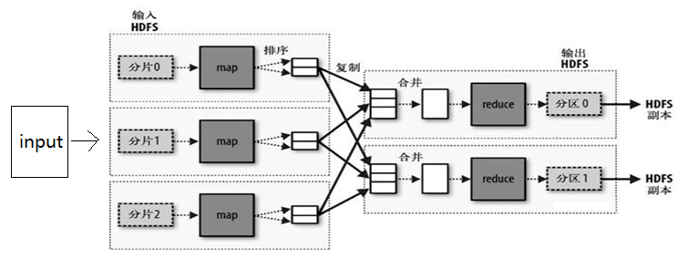
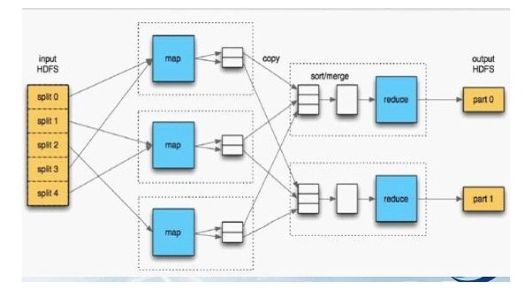
- 首先，我们能确定我们有一份输入，而且他的数据量会很大。
- 通过split之后，他变成了若干的分片，每个分片交给一个Map处理。
- map处理完后，tasktracker会把数据进行复制和排序，然后通过输出的key和value进行partition的划分，并把partition相同的map输出，合并为相同的reduce的输入。
- ruducer通过处理，把数据输出，每个相同的key，一定在一个reduce中处理完。每一个reduce至少对应一份输出(可以通过扩展MultipleOutputFormat来得到多分输出)
- 来看一个例子，如下图:(来自 《hadoop权威指南》 一书)
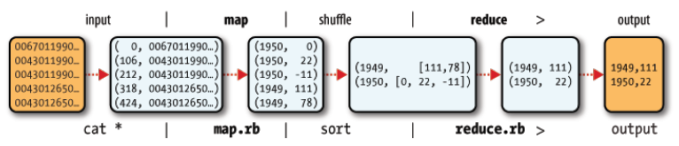 - 上图说明:
- 输入的数据可能就是一堆文本。
- mapper会解析每行数据，然后提取有效的数据，作为输出。这里的例子是从日志文件中提取每一年每天的气温，最后会计算每年的最高气温。
- map的输出就是一条一条的key-value。
- 通过shuffle之后，变成reduce的输入，这是相同的key对应的value被组合成了一个迭代。
- reduce的任务是提取每一年的最高气温，然后输出。
7.3.2 Mapper
- mapper可以选择性地继承MapreduceBase这个基类，他只是把一些方法实现了而已，即使方法体是空的。
- mapper必须实现Mapper接口(0.20以前的版本)，这是一个泛型接口，需要执行输入和输出的key-value的类型，这些类型通常都是Wriable接口的实现类。
- 实现map方法。方法有四个参数：前面两个就是输入的Key和value；第三个参数是OuputCollector用于收集输出；第四个是reporter用来报告一些状态，可以用于debug。
- input默认是一行一条记录，每条记录都放在value里边。
- output每次搜集一条K-V记录，一个K可以对应多个value，在reduce里面体现为一个iterator。
- 覆盖configure方法可以得到JobConf的实例，这个JobConf是在Job运行时传递过来的，可以跟外部资源进行数据交互。
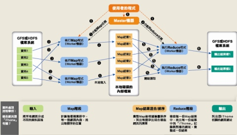
7.3.3 Reducer
- reduce也可以选择继承MapreduceBase这个基类，功能跟mapper一样。
- reducer必须实现Reducer接口，这个接口同样是泛型接口，意义跟Mapper的类似。
- 实现reduce方法。这个方法也有四个参数：第一个是输入的key；第二个是输入的value的迭代器，可以遍历所有的value，相当于一个列表；outputCollector跟map的一样，是输出的搜集器，每次搜集都是key-value的形式；report的作用跟map的相同。
- 在新版本中，hadoop已经将后面两个参数合并到一个context对象里边了，当然还会兼容就版本的接口。 >0.19.x
- 覆盖configure方法，作用跟map的相同。
- 覆盖close方法，可以做一些reduce结束后的处理工作。(clean up)
7.3.4 Combiner
- combiner的作用是将map的输出。先计算一遍，得到初步的合并结果减少reduce的计算压力。
- combiner的编写方法跟reduce是一样的，他本来就是一个Reducer的实现类。
- 当reducer符合函数F(a,b)=F(F(a),F(b))时，combinner可以与reduce相同。比如sum(a,b,c,d,e,f,g)=sum(sum(a,b),sum(c,d,e,f),sum(g))，还有max，min等等。
- 编写正确的combiner可以优化整个mapreduce程序的性能。(特别是当reduce是性能瓶颈的时候。)
- combiner可以跟reducer不同。
7.3.5 Configuration
- 后加的属性的值会覆盖前面定义的相同名称的属性的值。
- 被定义为final的属性(在属性定义中加上
<final>true</final>标签)不会被后面的同名属性定义的值给覆盖。 - 系统属性比通过资源定义的属性优先级高，也就是通过System.setProperty()方法会覆盖在资源文件中定义的属性的值。
- 系统属性定义必须在资源文件中有相应的定义才会生效。
- 通过
-D选项定义的属性，比在资源文件中定义的属性优先级要高。
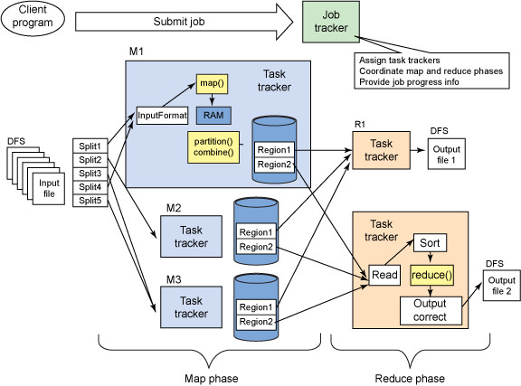
7.3.6 Run Jobs
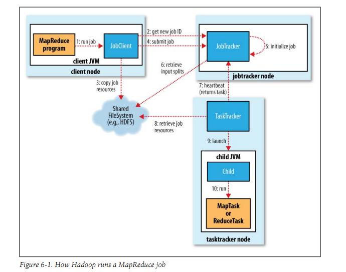
- 设置inputs & output
- 先判断输入是否存在 (不存在会导致出错，最好利用程序来判断。)
- 判断输出是否已经存在(存在也会导致出错)
- 养成一种好的习惯(先判断，再执行)
- 设置mapper、reducer、combiner。各个实现类的class对象。XXXX.class
- 设置inputformat & outputformat & types
- input和output format都有两种：一种是textfile，一种是sequencefile。 简单理解，textfile是文本组织的形式，sequence file是二进制组织的形式。
- Types的设置根据输入和输出的数据类型决定，设置各种Writable接口的实现类的class对象。
- 设置reduce count
- reduce count可以为0，当你的数据无需reduce的时候。
- reduce数量最好稍微少于当前可用的slots的数量，这样reduce就能在一波计算中算好。(一个slot可以理解为一个计算单元(资源)。)
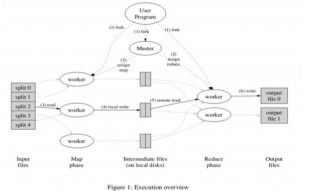
7.3.7 其他的一些细节.
- ChainMapper可以实现链式执行mapper他本身就是一个Mapper的实现类，提供了一个addMapper的方法。
- ChainReducer跟ChainMapper类似，可以实现链式执行reducer，是Reducer的实现类。
- 多个job先后运行，可以通过先后执行JobClient.runJob方法来实现先后顺序。
- 扩展MultipleOutputFormat接口，可以实现一个reduce对应多份输出 (而且可以指定文件名)。
- Partitioner接口用于将Map的输出结果进行分区，分区相同的key对应的数据会被同一个reducer处理。
- 提供了一个接口方法：public int getPartition(K2 key, V2 value, int numReduceTasks)
- 可以自己定义，根据key的某些特指来划分，也可以根据value的某些特质来划分。
- numReduceTasks就是设置的reduce的个数，一般返回的partition的值应该都小于这个值(%)。
- reporter的作用
- reporter.incrCounter(key, amount)，比如对数据计算中的一些不合规范的脏数据，我们可以通过counter来记录有多少。
- reporter.setStatus(status)方法可以设置一条状态消息，当我们发现job运行出现这条消息则说明出现了我们预期的(错误或者正确)的情况，用于debug。
- reporter.progress()，像mapreduce框架报告当前运行进度。这个progress可以起到心跳的作用。一个task要是超过10分钟没有想mapreduce框架报告情况，这个reduce会被kill掉。当你的任务处理会比较旧时最好定时向mapreduce汇报你的状态。
- 通过实现Wriable接口，我们可以自定义key和value的类型。使用起来就像pojo，不需要每次都进行parse。如果你的自定义类型是Key的类型，则需要同时实现Comparable接口。